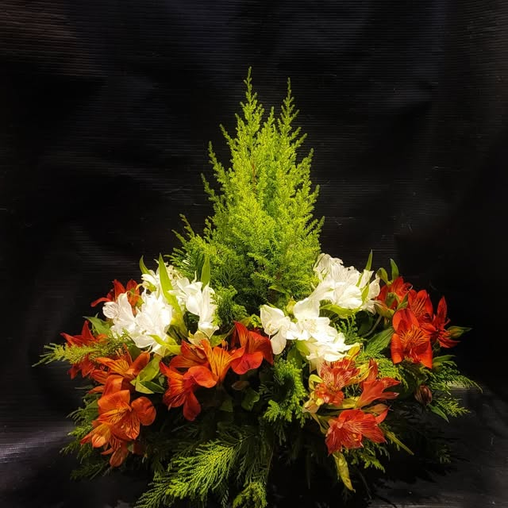

Coroas e arranjos de pêsames
Montamos coroas e arranjos de despedida com o cuidado e a discrição que o momento pede, e entregamos no velório ou na igreja. Atendemos também fora do horário comercial.

Homenagens com respeito
Temos opções para diferentes formas de despedida, sempre com beleza, qualidade e discrição.
A homenagem tradicional, em tamanhos diferentes, com faixa e mensagem se você quiser.
Ver opçõesComo pedir
Chame no WhatsApp ou ligue. Conte o que precisa e tiraremos suas dúvidas.
Informe o local (velório ou igreja) e o horário. Se quiser, o nome de quem envia para a faixa.
Montamos e levamos ao local combinado, no tempo certo para chegar direito.
Estamos aqui para ajudar
Sem pressa e sem complicação. Fale com a gente e a parte das flores fica resolvida.
(71) 9118-8740 Chamar no WhatsApp